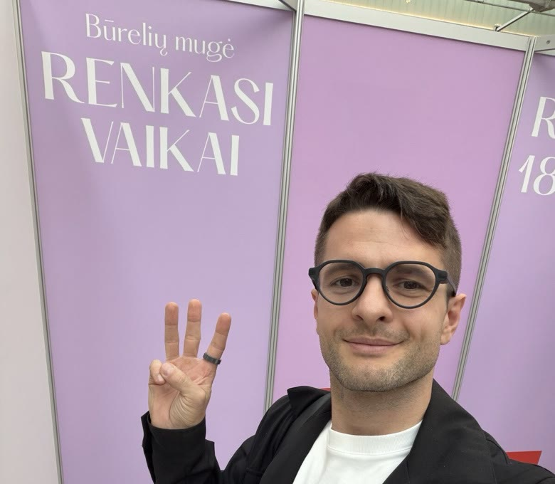
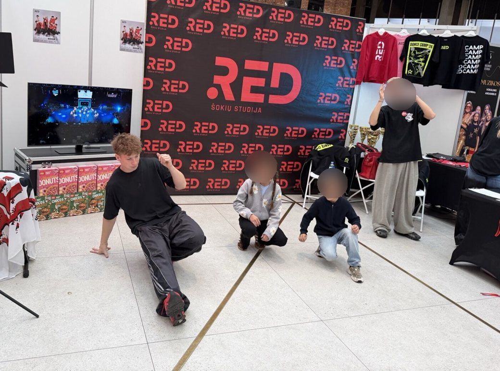
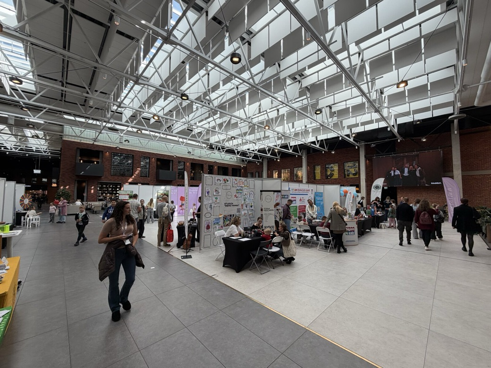

Kris Vas · laiškas tėvams · #03 · 2026-09
Ko labiausiai nori vaikas?
Tas pats laiškas, tik balsu. Skaito mano balso klonas (ElevenLabs), ne aš pats. 3 minutės.
🎧 Klausyk
⚗️ Eksperimentas: dirbtinis balsas gali suklysti tardamas vardą ar kirtį. Jei kas skambėjo keistai, parašyk man.
Būrelių mugė „Renkasi vaikai", PC Akropolis, Kaunas · 2026-09-19 · nuotrauka mano
🎬 „Labiausiai vaikas nori žmogaus"
Tėvų vebinaras „Veikla po pamokų", 2026-09-24. Nuo 49:37: Edita Pocinaitė-Janickė, o po jos mano pora sakinių. Visas įrašas 50 min. Vebinaras vyko Robotikos akademijos kanale; jos bendraįkūrėjas esu.

RED šokių studija, mugėje · vaikų veidai paslėpti

Visa mugė vienoje salėje · 2 dienos
Tekstas
Labas. Čia Kristijonas, tiksliau, mano balso klonas. Skaitau trečią laišką tėvams. Tema: ko labiausiai nori vaikas.
Ketvirtadienį vedžiau pirmą savo tėvų vebinarą. Užsiregistravo apie trys šimtai tėvų, gyvai vienu metu žiūrėjo iki šimto septyniasdešimt vieno. Pavėlavom pradėti aštuoniolika minučių, ir tai jautėsi. Kitą kartą pradėsim laiku.
Bet pabaigoje kibernetinės psichologijos analitikė Edita Pocinaitė-Janickė pasakė sakinį, kurį nešiojuosi iki šiol.
„Labiausiai, pasakysiu, vaikas nori žmogaus. Kas ves tą būrelį. Koks tas žmogus."
Pagalvok dabar: kas buvo tavo žmogus? Tas, kurį prisimeni iki šiol.
Jei prisijungei šią savaitę po vebinaro ar per Instagram, labas. Rašau kartą per savaitę apie tai, ko nori vaikai, ir ką su tuo daryti tau.
Aš su Edita sutinku. Ir štai kodėl.
Dirbtinis intelektas jau žino viską, kas parašyta vadovėlyje. Trupmenas paaiškins geriau už mane. Kartais primeluoja, bet dažniau ne.
Ko jis neturi, tai patirties. Jis niekada nenukrito nuo riedlentės. Nebuvo paskutinis, kurį išsirinko į komandą. Nejautė, kaip dreba rankos prieš pirmą pasirodymą scenoje.
Eteryje tai pasakiau savais žodžiais: dirbtinio intelekto laikais kaip niekad bus svarbu ne žinios, o patirtis. Tikri žmonės, kurie patys tai išgyveno ir nori tuo pasidalinti.
Todėl manau, kad būreliai yra dvidešimt pirmo amžiaus priešnuodis. Ten vaikas sutinka žmogų, kuris tai išgyveno pats.
Mokslas čia paprastas. Harvardo vaiko raidos centras rašo, kad vaikai, kurie gerai išsilaiko nepaisant sunkumų, turėjo bent vieną stabilų ir įsipareigojusį suaugusįjį šalia. Vieną. Tai gali būti mama. Gali būti treneris, mokytoja ar būrelio vadovas.
O dabar sankirta. Aštuoniasdešimt vienas procentas Lietuvos tėvų sako, kad renkantis būrelį svarbiausia yra paties vaiko nuomonė. Vaikas, anot Editos, renkasi žmogų. Tad renkantis būrelį verta paklausti dar vieno dalyko: su kuo jis ten bus?
Praeitą šeštadienį buvau Kaune, prekybos centre Akropolis, būrelių mugėje „Renkasi vaikai". Ėjau nuo stendo prie stendo ir žiūrėjau į žmones, ne į plakatus. Ten buvo sporto akademijos, šokiai, muzika, dailė, anglų kalba, programavimas ir robotika. Visų sąrašą su nuorodomis rasi laiške, sugrupuotą pagal tai, ko reikia vaikui, be jokio reitingo. Sąžiningai: Robotikos akademiją ir ExoClass esu bendrai įkūręs, todėl apie tai parašiau ir laiške.
Trys žingsniai šiai savaitei. Be pinigų.
Pirma. Paklausk prie vakarienės: „Kuris suaugęs tau būrelyje ar mokykloje patinka labiausiai? Kodėl?" Užsirašyk, ką atsakys.
Antra. Per bandomąją pamoką žiūrėk į vadovą, ne į salę. Ar po dešimties minučių jis žino tavo vaiko vardą? Ar klausia, ar tik aiškina?
Trečia. Papasakok vaikui apie savo žmogų. Treneris, mokytoja, kaimynas, kuris tave kažkada pakeitė. Viena istorija, penkios minutės.
Laiške dar radau tau tris knygas, tris dokumentinius filmus ir tris filmus šia tema, su mano vertinimais.
Kas buvo tavo žmogus? Vienas vardas ir vienas sakinys, ką jis padarė. Iš atsakymų sudėsiu kitą laišką. Skaitau viską.
Saugok save. Iki kitos savaitės.
Post scriptum. Laišką rašiau su disleksija ir su dirbtinio intelekto padėjėju, o balsu jį skaito mano balso klonas, ne aš pats. Visi mano nemokami įrankiai tėvams vienoje vietoje: krisvas taškas el tė.
Kas buvo tavo žmogus? Atsakymas ateina tiesiai man. Skaitau kiekvieną.
Atrašyk man →⚗️ Šį puslapį ir laišką kūriau su dirbtiniu intelektu; jis gali klysti. Esu Robotikos Akademijos, BrAIn Club ir ExoClass bendraįkūrėjas. Būrelių sąrašas laiške be reitingo, su interesų atskleidimu. Visi nemokami įrankiai tėvams: krisvas.lt